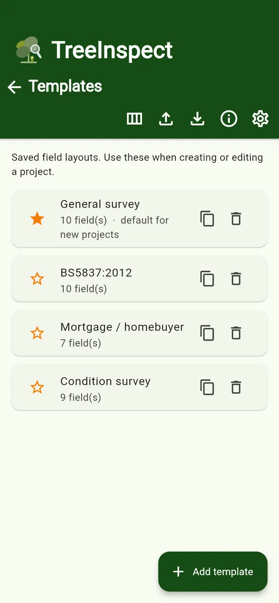
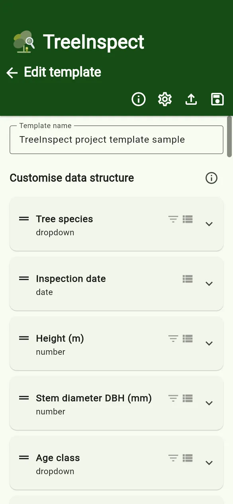
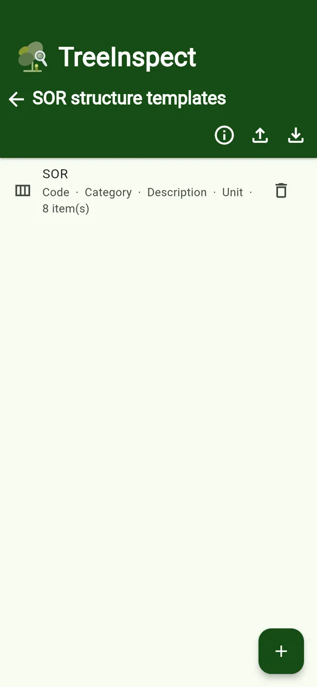
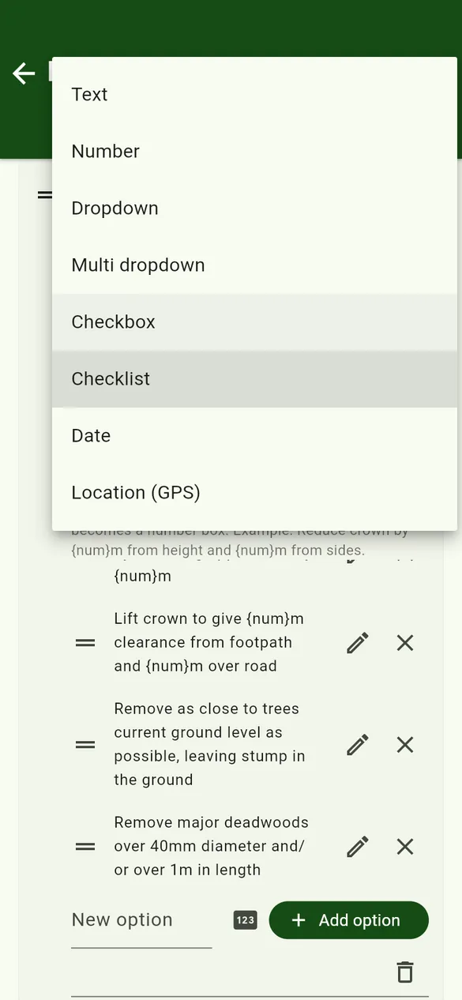
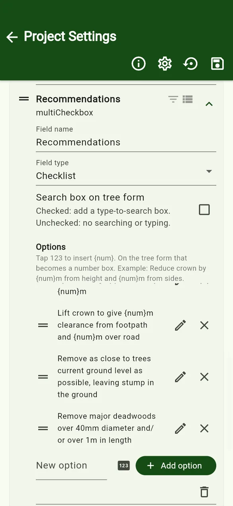
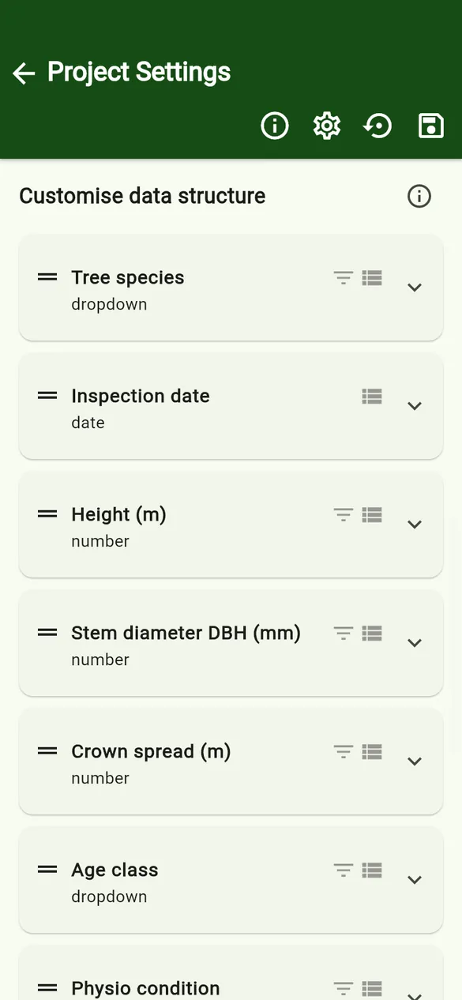
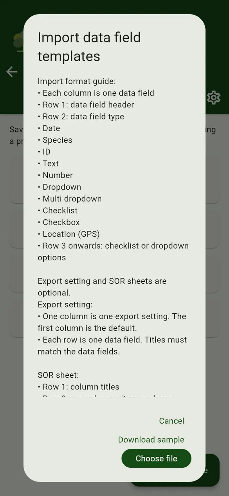
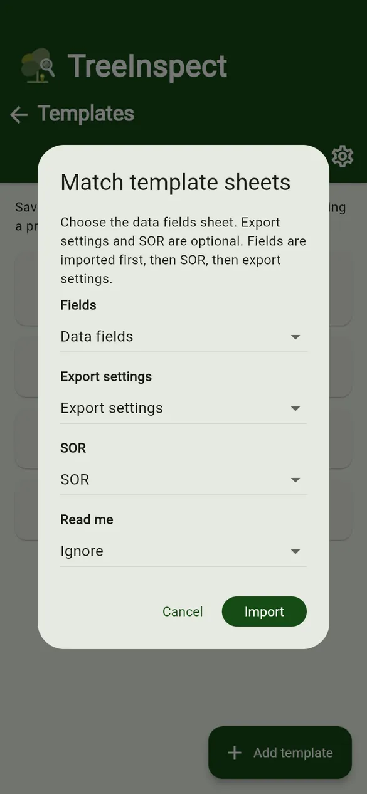
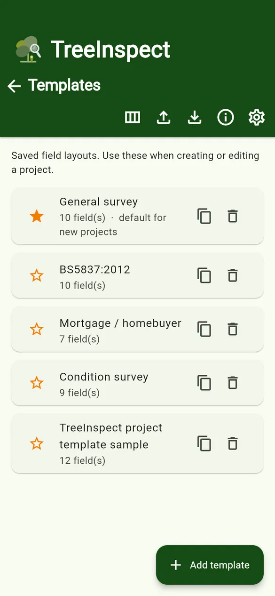

User guides › Templates and fields
Templates and fields
Project templates, field types, options, {num} number boxes, filter and list settings, and template import.
A project template is a saved set of data fields, together with export settings, quote settings and an SOR structure. New projects use the default template (marked with a star).



Manage templates
- + Add template – build a field layout from scratch.
- Star – make a template the default for new projects.
- Duplicate template – copy a template to make a variation.
- Import templates / Export templates – load a template from a spreadsheet, or share yours.
- Update from file (in the template editor) – reload a template from an edited spreadsheet.
- SOR structure templates – saved SOR column layouts and their items.
Field types



| Type | Use it for | Words accepted in a spreadsheet (row 2) |
|---|---|---|
| Text | Notes, observations | text (or anything not listed below) |
| Number | Height, DBH, crown spread | number, num, numeric |
| Dropdown | One choice: age class, condition | dropdown, drop, select, list |
| Multi dropdown | Several choices from one list | multidropdown, multidrop, multipledropdown |
| Checkbox | A single yes/no | checkbox, tick, tickbox, check |
| Checklist | Tick several: recommendations | checklist, multicheckbox, multitick, multiselect, ticks |
| Date | Any other date | date |
| Location (GPS) | Latitude and longitude | location, gps, latlong |
Capitals, spaces, hyphens and underscores are ignored, so Multi dropdown and multi-dropdown both work.
Options and {num}
- Dropdown, multi dropdown and checklist fields have a list of options. Type a new option and tap Add option; edit or delete options with the icons.
- Put
{num}in an option to insert a number box on the tree form, for exampleLift crown to give {num}m clearance over footpath. In the option editor, the number-box button inserts it for you. - Checklists can have a search box on the tree form for long lists.
- Every dropdown also offers Other (type here) on the form.
Filter and List
Each field has two small icons: Filter adds the field to the project’s sort and filter options, and List shows its value on the tree list under each tree. Species, photo, map and price are always shown; at most four extra fields can be highlighted.
Import a template from a spreadsheet
- On the Templates screen tap Import templates. Read the format guide; you can also download the app’s own sample there.
- Tap Choose file and pick the spreadsheet.
- In Match template sheets, set each sheet to Data fields, Export settings, SOR or Ignore, then tap Import.
- The new template is named after the file.



The format is explained column by column on the sample templates page.